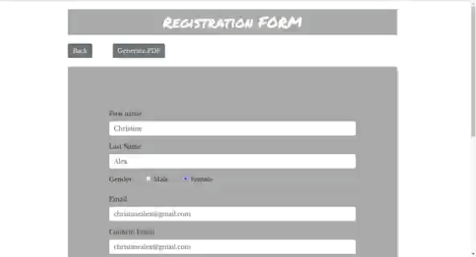

User Profile Management System
User Profile Management System is a simple web-application written using MERN stack to demonstrate the CRUD operations.
MERN stack comprises of four technologies namely MongoDB, Express, React and Node
Each of these four powerful technologies provides an end-to-end framework for the developers to work in and each of these technologies play a big part in the development of web applications.
Getting to know MERN stack components:
-
MongoDB: cross-platform document-oriented database
MongoDB is a NoSQL database where each record is a document comprising of key-value pairs that are similar to JSON (JavaScript Object Notation) objects. MongoDB is flexible and allows its users to create schema, databases, tables, etc. Documents that are identifiable by a primary key make up the basic unit of MongoDB. -
Express: backend framework
Express is a Node.js framework. Rather than writing the code using Node.js and creating loads of Node modules, Express makes it simpler and easier to write the back-end code. Express helps in designing great web applications and APIs. Express supports many middlewares which makes the code shorter and easier to write. -
React: frontend framework
React is a JavaScript library that is used for building user interfaces. React is used for the development of single-page applications and mobile applications because of its ability to handle rapidly changing data. React allows users to code in JavasScript and create UI components. -
Node: JS runtime environment
Node.js provides a JavaScript Environment which allows the user to run their code on the server (outside the browser). Node pack manager i.e. npm allows the user to choose from thousands of free packages (node modules) to download.
Getting to know CRUD operations:
In computer programming, Create, Read, Update, and Delete (CRUD) are the four basic functions of persistent storage.
Alternate words are sometimes used when defining the four basic functions of CRUD, such as retrieve instead of read, modify instead of update, or destroy instead of delete. CRUD is also sometimes used to describe user interface conventions that facilitate viewing, searching, and changing information, often using computer-based forms and reports.
- Create: create or add new entries
- Read: read, retrieve, search or view existing entries
- Update: update, modify or edit existing entries
- Delete: delete, destroy or remove existing entries
Getting to know the concepts in project:
- Routing in React with url parameters
- Working with functional and class react componets
- Maintaining state of react components
- Passing data between react components using props and parent/child relationship
- Working with API requests using axios
- Using react-strap (react version of bootstrap) and custom styling to style components
- Conditional rendering of react-components
- Maintaining flash-messages in react
- Separating rendering logic and maintaining state logic for ease of development and understanding
- A demo of completely custom validation on form
- Working with react-table
- Routing in express with url parameters
- Allowing CORS (cross-origin resource sharing)
- Parsing forms in express
- Working with get/post requests in express
- Defining schema's for mongodb using mongoose
- Connection to cloud mongodb (mongodb-atlas)
- Create, Read, Update and Delete operations using mongodb
- Integrating front-end and back-end
- Generating CSV reports from tabular data
- Generate pdf of react-components with styles
- and many more concepts...
Custom execution:
Download the zip (user-management.zip) file and extract it.
cd into user-management-v1
cd into myapp directory and run npm install (this will install required packages on front-end)
run npm start (this will start the front-end react-app)
cd into api directory and run npm install (this will install required packages on back-end)
run npm start (this will start the back-end server)
Browse localhost:3000/ to play with the application
Quick working demo:
-
Create and read operation:

-
Update operation:

-
Delete operation:

-
Custom email validation (constraint email to a custom pattern for example):

-
Custom password validation (maintaining state of react components):

-
Do not repeat registrations (conditional operations):

-
A complete custom validation on form:

-
A simple operation to re-arrange the content:

-
Generating CSV reports from tabular data:

-
Generate pdf of react-components with styles:
